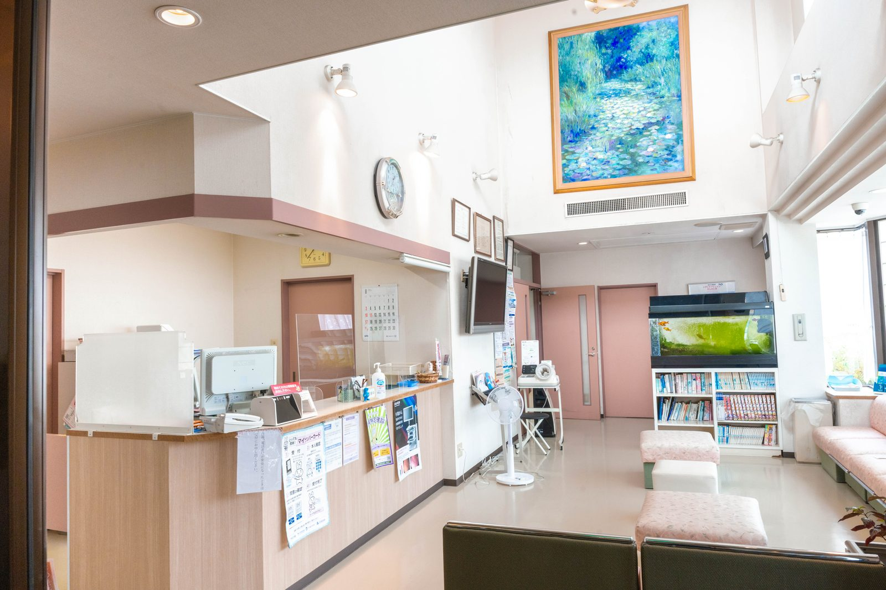
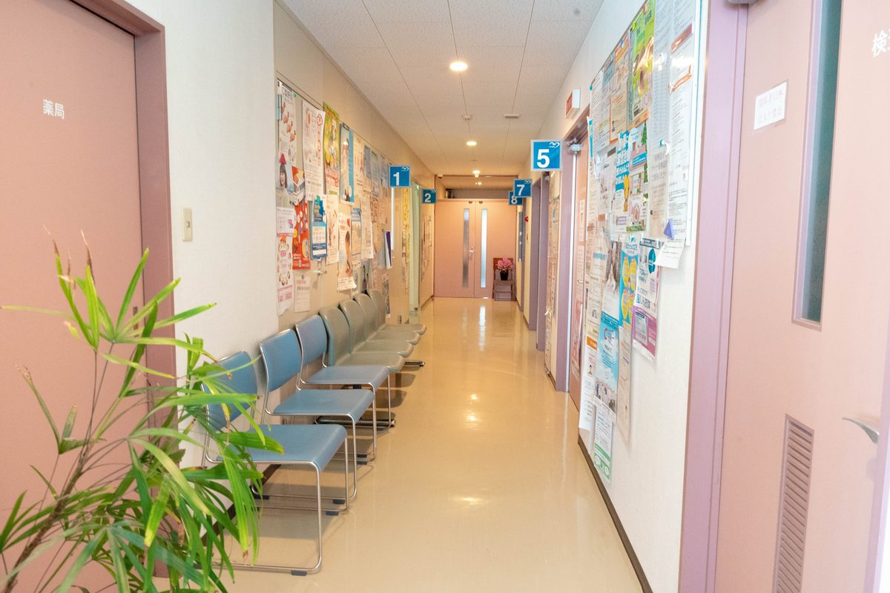
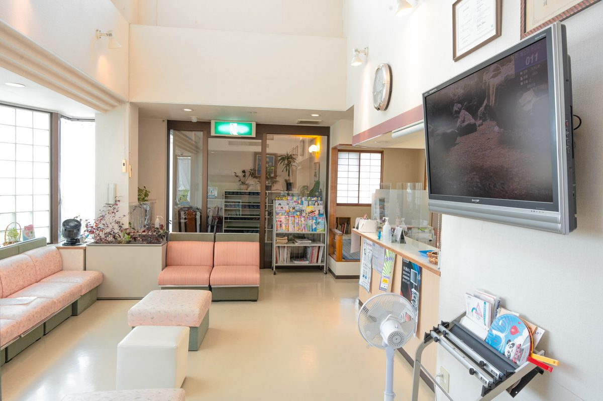
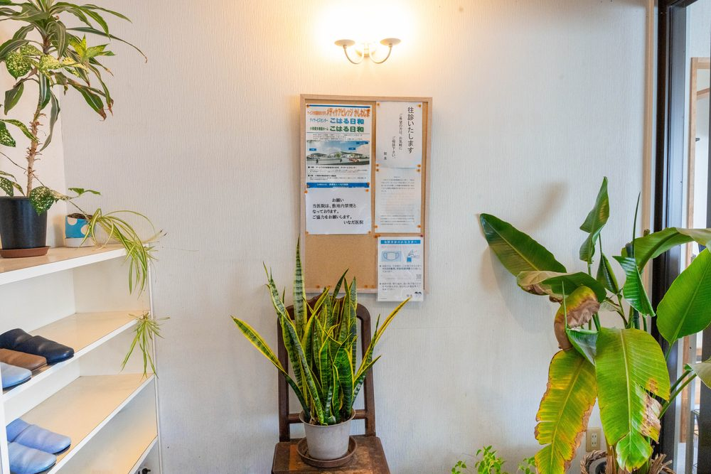
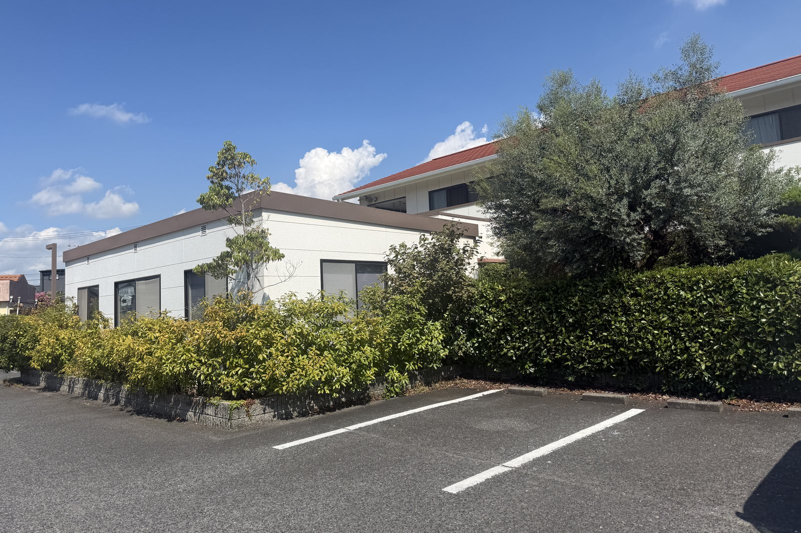

初めていなだ医院を受診したいのですが、何が必要ですか？
A. 回答健康保険証（マイナ保険証）をお持ちください。お薬手帳や他院の紹介状、これまでの検査結果があればあわせてお持ちいただくと、より的確な診療につながります。受付で問診票にご記入いただいたのち、順番に診察となります。

当日の持ち物
- 健康保険証（マイナ保険証をお持ちの方はマイナンバーカード。お持ちでない方は、加入している健康保険から交付される資格確認書などをご持参ください）
- お薬手帳（服用中のお薬がある場合）
- 他の医療機関からの紹介状（お持ちの場合）
- 各種医療証（お持ちの場合）
来院前に整理しておくとよいこと
初診では、いまの症状について一から医師にお伝えいただくことになります。診察室に入ると緊張してうまく言えなかった、あとから大事なことを思い出した、ということは珍しくありません。来院前に次のような点を頭の中で整理しておく、あるいはメモに書いてお持ちいただくと、限られた診察時間のなかでも状況が正確に伝わりやすくなります。
受付や診察で聞かれることの多い項目
- いつから：症状に気づいたのはいつ頃か（何日前、何週間前など）
- どんなときに：朝だけ、体を動かしたとき、食後、夜間など
- どんなふうに：ズキズキ、締めつけられる、じんわり、など感じ方の言葉
- 強さと変化：だんだん強くなっているか、良くなったり悪くなったりするか
- ほかの症状：熱、せき、息切れ、吐き気、しびれなど一緒に出ているもの
- 飲んでいるお薬：処方薬のほか、市販薬やサプリメントも含めて
- これまでの病気・アレルギー：手術や入院の経験、薬や食べ物でのアレルギー
- 気になっていること：いちばん困っていること、聞いておきたいこと
とくに「いつから」は、原因を考えるうえで大きな手がかりになります。数日のことなのか、数か月続いているのかで、考えられることが変わってくるためです。カレンダーやスマートフォンの記録を見返して、だいたいの時期を思い出しておいていただけると助かります。
また、聞きたいことが複数ある場合は、優先順位をつけておくと安心です。いちばん困っている症状から順にお伝えいただければ、その日のうちに必要な検査や対応を整理しやすくなります。

受付から診察までの流れ
- 受付で保険証を提示し、初診の方は問診票にご記入いただきます
- 順番が来ましたらお名前をお呼びしますので、診察室にお入りください
- 診察後、必要に応じて検査・お薬の処方を行います
- 会計を済ませてご帰宅、または院内処方・院外処方をご案内します
診療時間
月〜土曜日 7:00〜12:00 ／ 月〜金曜日 14:30〜18:30（土曜日は14:30〜17:30まで）
朝7時から診療しておりますので、お仕事前の受診にもご利用いただけます。
待ち時間をできるだけ短くするために
クリニックの混み具合は日によって変わります。一般に、休み明けの午前中や、悪天候のあと、感染症が流行している時期は混み合いやすい傾向があります。当日の状況によっては、お待ちいただく時間が長くなることもありますので、次のような点をご参考にしてください。
待ち時間を短くするための工夫
- 時間に余裕のある日を選び、比較的落ち着いている時間帯を選ぶ
- 朝7時からの早い時間帯を活用する（お仕事前の受診にも使えます）
- 保険証やお薬手帳をあらかじめ手元に出しておく
- 症状のメモを用意しておき、問診票の記入をスムーズにする
- ご家族の受診に付き添う場合は、聞きたいことを事前にまとめておく
- 混み具合や、その日の受付の状況を電話で確認してから出発する
順番のとり方や事前予約の可否、健診・予防接種など診療内容ごとの受付方法は、内容によって取り扱いが異なります。実際のご案内についてはお電話（086-525-0600）でご確認ください。発熱など、ほかの患者さんと分けた対応が必要な症状がある場合も、来院前にお電話でご相談いただけると、到着後の流れがスムーズになります。
なお、症状が重い方や急を要する方の診察を優先させていただく場合があります。お待ちのあいだに具合が悪くなったときは、我慢せずに受付のスタッフへお声がけください。



駐車場・アクセス
無料駐車場を22台分ご用意しています。両備バス「西中学校前」より徒歩3分、ニシナ玉島柏島店の西隣りです。

こんなときはどうすればよいですか
小さなお子さまを連れて受診する場合：ご自身の受診にお子さまを連れて来られる方もいらっしゃいます。母子手帳や保険証、医療証のほか、待ち時間に備えて飲み物や絵本などをお持ちいただくと安心です。院内には畳敷きの和室があり、授乳やおむつ替え、横にならせてあげたいときにお使いいただけます。お子さま自身の受診の場合は、いつから、どんな症状か、食欲や機嫌、水分がとれているかを見ておいていただけると診察の助けになります。
車椅子・杖をお使いの方、付き添いが必要な方：段差や動線でご不安がある場合は、来院前にお電話でご相談ください。院内でのご案内について、あらかじめお伝えできることがあります。ご自身で症状を説明することが難しい方は、ご家族など状況をご存じの方に付き添っていただくと、経過が正確に伝わりやすくなります。
他の医療機関からの紹介状をお持ちの場合：紹介状（診療情報提供書）は開封せずにそのまま受付にお出しください。あわせて、これまでの検査結果や画像のデータをお持ちであればご持参いただくと、同じ検査を繰り返さずに済むことがあります。
かかりつけとしての受診を考えている場合：普段の体調や持病について相談できる医療機関を持っておくと、体調をくずしたときに経過をふまえた判断がしやすくなるとされています。健康診断の結果や、他院で受けている治療の内容についても、遠慮なくご相談ください。
ご不明点はお電話でも承っております
最終更新：2026年8月26日